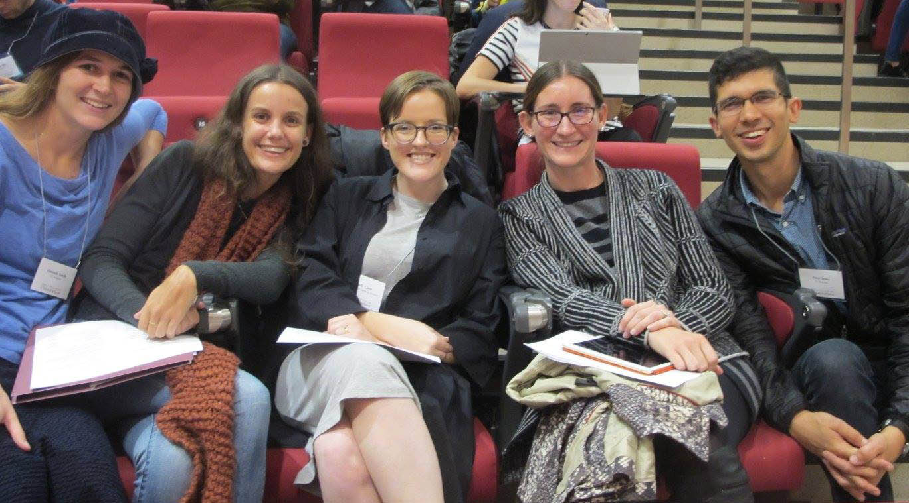
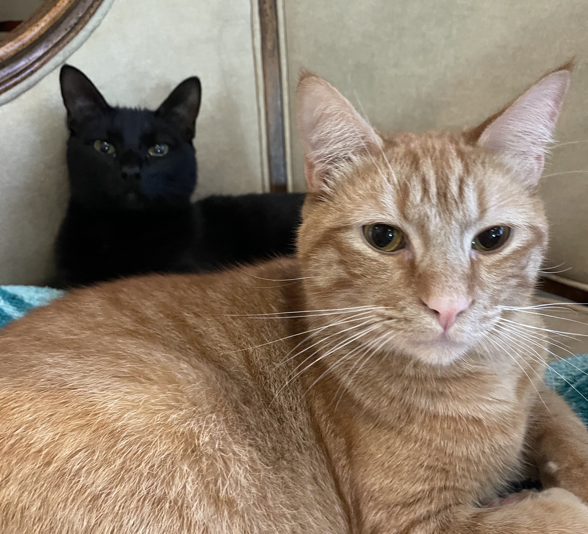
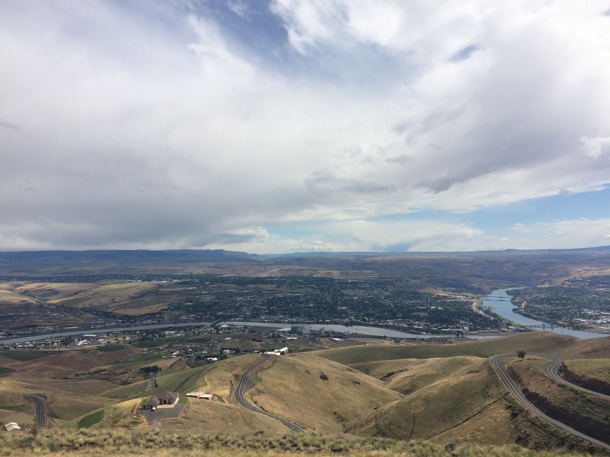

I am a syntactician and a semanticist. I am also a fieldworker. The big questions that interest me concern cross-linguistic variation: How much variation is there in syntax? How much is there in semantics? What sorts of abstract universals can be found in the midst of this variation, and what types of theoretical tools are most useful in modeling them?
In recent years, most of my interests have revolved around two themes, long distance dependencies (Agree) and attitude reports. I have worked to develop a theory of Agree that I call the interaction/satisfaction theory. A paper that situates that view in the literature is here. On attitude reports, my most in-depth work is my 2020 book on indexical shift, for which see here. You can find papers on these and other topics over on the papers page.
Much of my work prior to the pandemic drew on findings in the syntax and semantics of Nez Perce, a Sahaptian language of the Columbia River Plateau. Some of the particular topics I worked on in collaboration with Nez Perce speakers are
I am professor of linguistics at UC Berkeley. I serve as editor-in-chief of Natural Language Semantics. I am also founding co-editor of Berkeley Papers in Formal Linguistics, and previously served as an associate editor at Natural Language and Linguistic Theory.
Before coming to Berkeley in 2015, I held tenure-track positions at UC Santa Cruz and at Harvard; before that, I was a graduate student at the University of Massachusetts, Amherst. My dissertation was co-advised by Angelika Kratzer and Rajesh Bhatt. You can read about the Kratzer side of the academic genealogy here and here, thanks to Kai von Fintel. My academic ancestors on the Bhatt side can be found here.
Before that, I was an undergrad at Brandeis University, where I majored in linguistics and in philosophy. And still further back, I grew up in Fairfax County, Virginia, where I attended TJHSST (motto "today is tomorrow'').
Dwinelle 1223, UC Berkeley, Berkeley CA 94720
If we're on a first-name basis, please call me "Amy Rose." Relatedly, my name is alphabetized like this:
Deal, Amy Rose

With the Berkeley crew (Hannah Sande, Virginia Dawson, Emily Clem, and Peter Jenks) at NELS 47, Amherst, October 2016

My cats Nori and Gari

The view from Lewiston Hill, Nez Perce County, Idaho